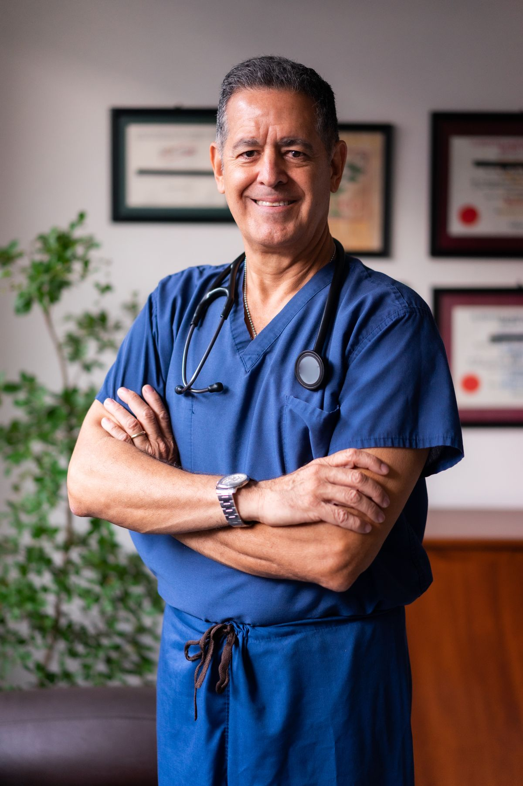

Medical Services for International Patients
ChinaMed Access is an international patient coordination platform. We help you identify appropriate hospitals and specialists in Shanghai, organize your medical records, coordinate appointments, and support you through treatment and recovery. Medical decisions are always made by qualified physicians at accredited hospitals.
Cancer Care
Surgical oncology, radiotherapy, chemotherapy and multidisciplinary tumor boards at leading cancer centers.
Surgery & Orthopedics
Complex surgery, joint replacement, spine, neurosurgery and minimally invasive procedures.
Clinical Trial Information
Information coordination for qualified clinical research studies — screening is always managed by the research institution.

Internal Medicine
Cardiology, endocrinology, gastroenterology, neurology and multidisciplinary consultation.
TCM & Rehabilitation
Acupuncture, Tuina, herbal medicine, chronic pain management and post-operative rehabilitation.
Health Check-up
Comprehensive screening, cardiovascular risk assessment and early cancer screening programs.
Meet Our Specialist Network
We coordinate with leading physicians at accredited Shanghai hospitals. Here is a sample of our specialist network — all information from public hospital profiles.
Prof. Wang Lu
Hepatobiliary oncology — over 800 liver surgeries per year; 1,000+ laparoscopic liver resections.
Prof. Yan Yan
Coronary disease, heart failure and cardiomyopathy — 20+ years of interventional cardiology.
Prof. Liu Wanjun
Hip & knee replacement, revision surgery and joint-preserving procedures.
Prof. Pei Jian
Acupuncture for neurological disorders, chronic pain and immune conditions.
Patient Journeys
Anonymized patient stories illustrate how our coordination works. Names and identifying details have been changed to protect privacy.
From Jakarta to Shanghai: Liver Cancer Treatment
A 52-year-old patient from Indonesia with early-stage hepatocellular carcinoma was assessed by a hepatobiliary team in Shanghai. After document review and a remote second opinion, the patient traveled for laparoscopic liver resection, followed by discharge documentation and remote follow-up with his local oncologist.
Knee Replacement for a Malaysian Patient
A 61-year-old patient with advanced knee osteoarthritis received a written surgical plan and cost estimate before travel, underwent total knee replacement, and completed a two-week rehabilitation plan before returning home.
How It Works
Every patient works with one dedicated case manager across the entire journey. See the full 10-step process →
- Submit your case — send medical records (reports, imaging, pathology) via our secure case review form.
- Physician assessment — an accredited hospital specialist independently evaluates whether the case is suitable.
- Treatment plan & cost estimate — the hospital provides a formal proposal; medical fees are paid directly to the hospital.
- Travel arrangement — visa documentation support, flights, hotel, airport pickup and translation.
- Treatment in Shanghai — our team handles coordination, interpretation and daily needs.
- Recovery & follow-up — discharge documents, medication instructions, and remote follow-up with your local doctor.
Why Shanghai?
- Leading hospitals: Fudan-affiliated cancer and general hospitals, Zhongshan Hospital, Huashan Hospital, Ruijin Hospital and Shanghai Ninth People's Hospital — among China's top institutions.
- International patient services: Shanghai published an implementation plan for international medical services (2024) and an international medical service local standard (DB31/T 1487—2024).
- Accessibility: Direct flights from most of Southeast Asia, the Middle East and beyond; a mature international city with multilingual support.
- Innovative treatments: Access to therapies and medical devices not yet available in many countries, subject to hospital and regulatory approval.
Frequently Asked Questions
Can foreign patients receive treatment in Chinese hospitals?
Yes. Many leading Chinese hospitals — especially in Shanghai, Beijing and Guangzhou — have international patient departments that accept overseas patients. ChinaMed Access helps coordinate records, appointments and logistics; all medical treatment is delivered by accredited hospitals and physicians.
How do I get a medical visa for China?
Patients typically apply for a medical visa (S2) using an invitation letter from the treating hospital plus a medical appointment notice. We assist with document preparation, but final visa decisions are made by Chinese consulates and authorities.
How much does treatment in China cost?
Medical fees are set and collected directly by the hospital. Costs vary by condition, procedure and hospital. After your case is reviewed, the hospital provides a formal written cost estimate before you travel. Our coordination service fees are separate and itemized.
Do you arrange flights, hotels and interpreters?
Yes. Our coordination service includes visa document support, airport pickup, hotel arrangements near the hospital, in-hospital interpretation, and daily coordination during treatment.
What happens after I return home?
We prepare a complete discharge package (discharge summary, pathology, imaging, medication list, follow-up plan) and coordinate remote follow-up with your local physician, including arrangements for any necessary return visits.
About ChinaMed Access
ChinaMed Access is an independent international patient coordination service. We are not a hospital and do not provide medical diagnosis or treatment. Our role is to connect patients with accredited hospitals and specialists, organize records and logistics, and ensure smooth communication across language and borders. Learn more →
Compliance note: ChinaMed Access provides international patient coordination services. Per China's Medical Advertisement Recognition Guidelines (2025), entities other than licensed medical institutions may not publish medical advertisements. We do not advertise hospital services, promise cure rates, or guarantee clinical trial enrollment. Hospital and physician information published on this site is objective public information; treatment decisions rest solely with qualified physicians and patients.
Medical disclaimer: This website provides general information for educational purposes. It is not a substitute for professional medical advice, diagnosis, or treatment. Always consult a qualified healthcare provider. In case of emergency, contact local emergency services.